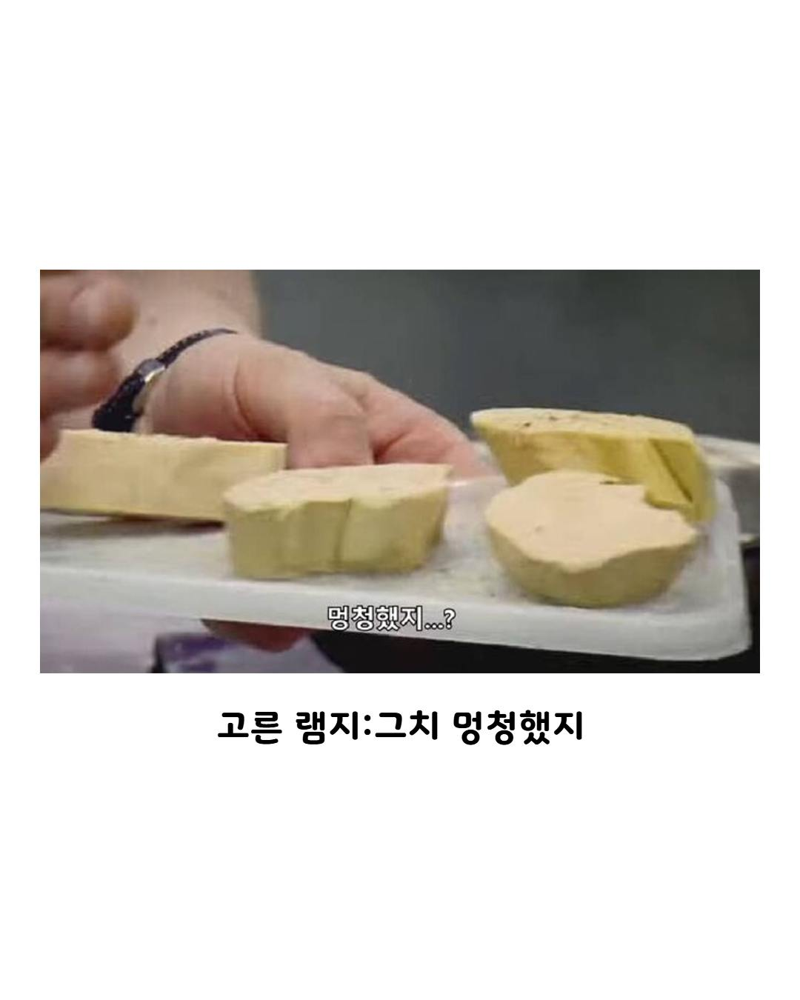

자진납세의 중요성.jpg
댓글
90%가 지방이면 익혔을 때 형태를 유지할 수 있나? 간 사이사이 지방이 껴서 만들어진 게 푸아그라잖아
저 아저씨 보면 디스커스팅만 생각난다
아직 늦지 않았다. 딱 네 글자면 된다. 잘. 못. 했. 음. 그. 냥. 가. 라.
푸아그라 요리 해본적 없는데 그냥 팬 달구고 바로 올려도 기름 나오면서 기름 두른거랑 차이 없이 안 들러붙고 잘 구워지나보네
스텐팬에 기름안두르고 삼겹살 던져봤는데 잘되더라
뜬금없는데 자진납세의 납세가
'세금을 내다' 의 납세였네...
아는 것을 안다고 말하는 것
모르는 것을 모른다고 말하는 것
둘 다 똑똑한 사람이 할 수 있는 말이다.
롤재판 보면 지 생각없는 플레이를 후시녹음맹키로 생각있었던 플레이로 포장하고 말도안되는소리라고 일갈하면 존나 이해안된다고 앵무새 빙의해서 반복함 ㅋㅋㅋㅋ